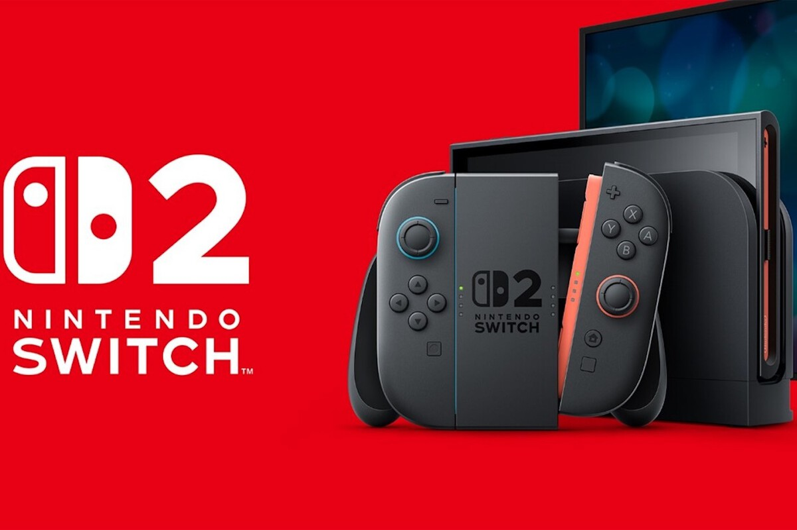
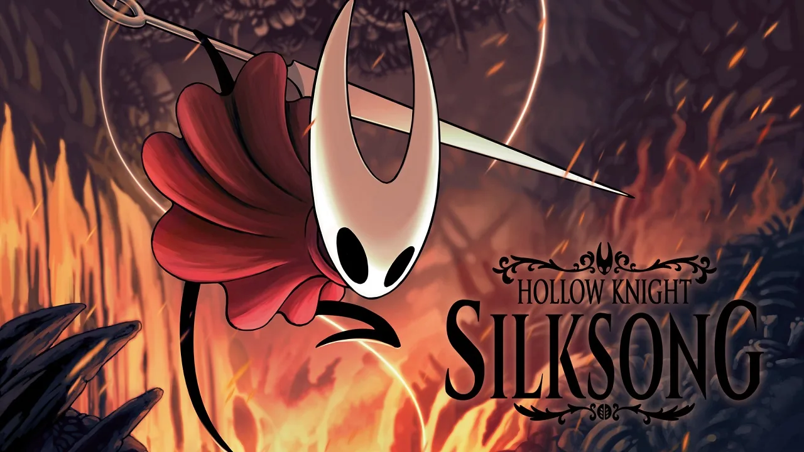

Temas más populares
- Rumores de Playstation 6
- Hollow Knight: Silksong
- GTA 6
Últimas noticias
Nintendo Switch 2
Después de meses de conjeturas que nos han tenido pendientes de los anuncios de Nintendo desde que la compañía afirmó el pasado 16 de enero que la consola se mostraría a principios de 2025, finalmente la fecha se ha revelado en un Direct el pasado 2 de abril: la consola llegará a todo el mundo el próximo 5 de junio.
¿Cuánto costará?
La consolá contará con un precio de $449.99 MSRP sin el Mario Kart World incluido y $499.99 MSRP con el bundle de Mario Kart World aunque estos precios pueden variar debido a la subida de los aranceles en Estados Unidos.
Trailer de la Switch 2
Hollow Knight Silksong
El Hollow Knight Silksong ha sido anunciado por fin en el direct de la Switch 2 generando mayor interés que en la propia consola con un lanzamiento en el año 2025 para las siguientes plataformas:
- Lanzamiento en PC: Año 2025
- Lanzamiento en Switch: Año 2025
- Lanzamiento en Xbox Series X: Año 2025
- Lanzamiento en Xbox One: Año 2025
- Lanzamiento en PS5: Año 2025
- Lanzamiento en PS4: Año 2025
- Lanzamiento en Switch 2: Año 2025
El jefe de marketing y publicación de Team Cherry, Matthew 'Leth' Griffin, ha hablado sobre el lanzamiento del juego en Nintendo Switch 2, confirmando que también llegará a la consola original. "Sólo por aclarar...Hollow Knight: Silksong llegará tanto a Nintendo Switch como a Nintendo Switch 2" , dijo en su cuenta de X (antes Twitter) .
El mismo Griffin salió hace unos meses para actualizar el estado del desarrollo, ante la falta de noticias sobre Silksong. Pero finalmente fue el Nintendo Direct el que puso una ventana de lanzamiento más concreta del juego metroidvania.
Sobre mí
Juan Arocha estudiante de la Universidad Católica Andrés Bello (UCAB).
Sobre mí
No sé... pero mira un gato 👍